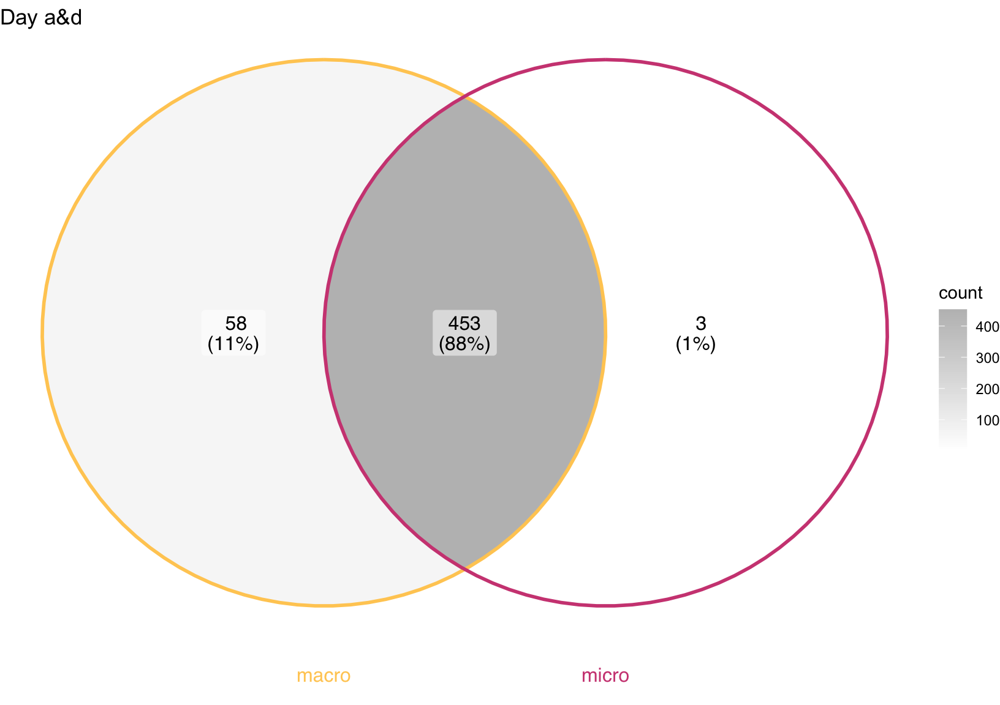
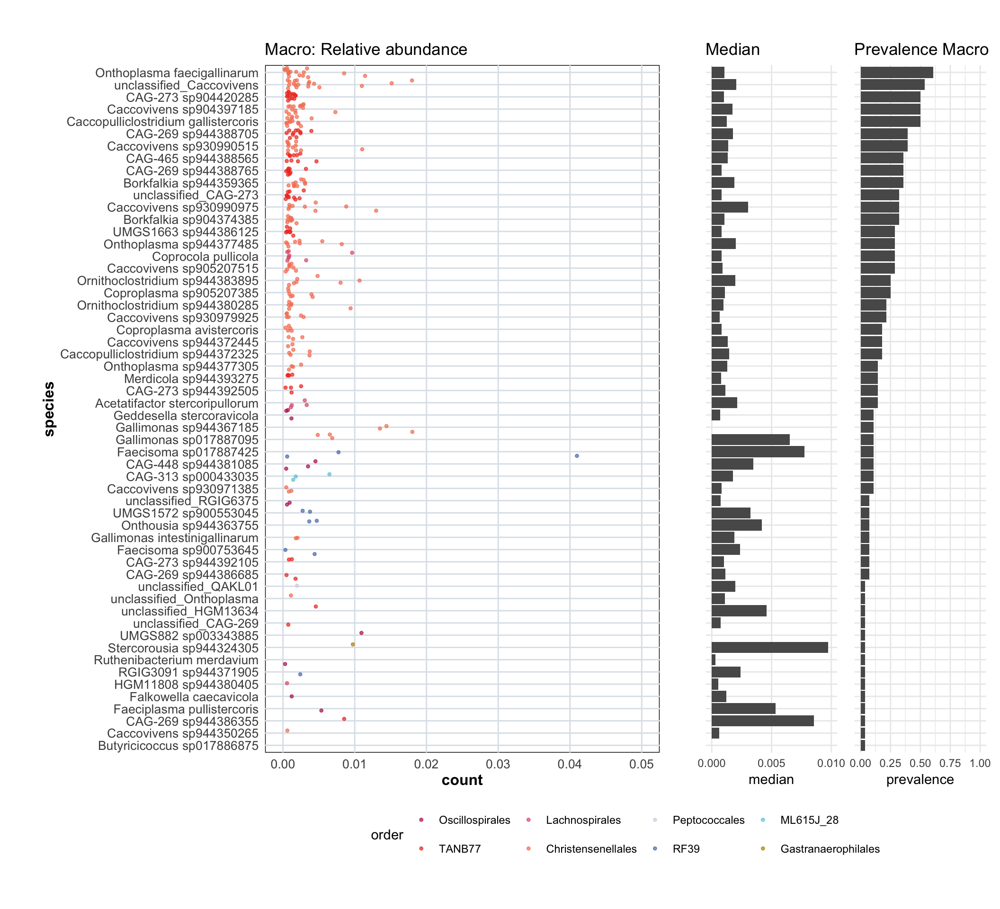
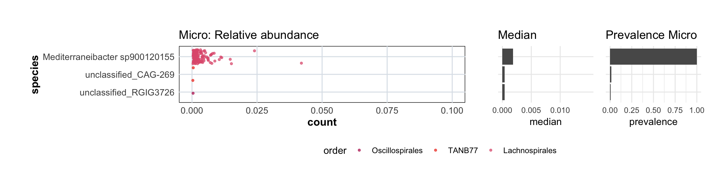

17 Beta Diversity - Macro vs Micro Comparison
17.1 Genomes overlap
group1 <- tidy_plot_genome_counts_filt_30_macro_closed %>%
filter(type_simple == "P") %>%
filter(age_category %in% c("a", "d")) %>%
pull(genome) %>%
unique()
group2 <- tidy_plot_genome_counts_filt_30_closed %>%
filter(age_category %in% c("a", "d")) %>%
filter(type_simple == "P") %>%
pull(genome) %>%
unique()
venn_data <- list(
macro = group1,
micro = group2
)
# Taxa unique to group1 only
unique_group1 <- setdiff(group1, group2) # macro
# Taxa unique to group2 only
unique_group2 <- setdiff(group2, group1) # micro
# Filter once (macro/micro + genomes of interest)
filtered_group1 <- tidy_plot_genome_counts_filt_30_macro_closed %>%
filter(type_simple == "P") %>%
filter(age_category %in% c("a", "d")) %>%
filter(genome %in% unique_group1)
filtered_group2 <- tidy_plot_genome_counts_filt_30_closed %>%
filter(type_simple == "P") %>%
filter(age_category %in% c("a", "d")) %>%
filter(genome %in% unique_group2)ggVennDiagram(
venn_data,
set_color = c(macro = "#ffcc62", micro = "#cf4a82")) +
scale_fill_gradient(low = "white", high = "grey") +
ggtitle("Day a&d") +
coord_flip()
# 2) Summaries per species + prevalence (denominator from the SAME filtered data)
denom <- n_distinct(filtered_group1$microsample)
unique_group1_df <- filtered_group1 %>%
group_by(species) %>%
summarise(
median = median(count, na.rm = TRUE),
n_samples = n_distinct(microsample),
prevalence = n_samples / denom,
.groups = "drop"
) #%>%
#filter(prevalence > 0.05)
# 3) Plotting data: keep only species above cutoff and bring in prevalence for ordering/labels
plot_df <- filtered_group1 %>%
inner_join(unique_group1_df %>% select(species, prevalence), by = "species") %>%
mutate(species = fct_reorder(species, prevalence, .desc = FALSE))
# 4) Jitter plot (counts) + prevalence mini bar side-by-side
p1 <- ggplot(plot_df, aes(x = count, y = species, color = order)) +
geom_jitter(alpha = 0.7, size = 0.9) +
scale_color_manual(values = order_colors) +
theme_minimal() +
custom_ggplot_theme +
scale_x_continuous(limits = c(0, 0.05)) +
ggtitle("Macro: Relative abundance")
p2 <- unique_group1_df %>%
mutate(species = fct_reorder(species, prevalence, .desc = FALSE)) %>%
ggplot(aes(x = prevalence, y = species)) +
geom_col() +
theme_minimal() +
theme(axis.title.y = element_blank(),
axis.text.y = element_blank(),
axis.ticks.y = element_blank()) +
scale_x_continuous(limits = c(0, 1)) +
ggtitle("Prevalence Macro")
p3 <- unique_group1_df %>%
mutate(species = fct_reorder(species, prevalence, .desc = FALSE)) %>%
ggplot(aes(x = median, y = species)) +
geom_col() +
theme_minimal() +
theme(axis.title.y = element_blank(),
axis.text.y = element_blank(),
axis.ticks.y = element_blank(),
panel.grid.minor.x = element_blank()) +
scale_x_continuous(limits = c(0, 0.01), breaks = c(0, 0.005, 0.01)) +
ggtitle("Median")
(p1 + p3 + p2) + plot_layout(widths = c(3, 1, 1), guides = "collect") &
theme(legend.position = "bottom", legend.box = "vertical")
# 2) Summaries per species + prevalence (denominator from the SAME filtered data)
denom <- n_distinct(filtered_group2$microsample)
unique_group2_df <- filtered_group2 %>%
group_by(species) %>%
summarise(
median = median(count, na.rm = TRUE),
n_samples = n_distinct(microsample),
prevalence = n_samples / denom,
.groups = "drop"
) #%>%
#filter(prevalence > 0.05)
# 3) Plotting data: keep only species above cutoff and bring in prevalence for ordering/labels
plot_df <- filtered_group2 %>%
inner_join(unique_group2_df %>% select(species, prevalence), by = "species") %>%
mutate(species = fct_reorder(species, prevalence, .desc = FALSE))
# 4) Jitter plot (counts) + prevalence mini bar side-by-side
p1 <- ggplot(plot_df, aes(x = count, y = species, color = order)) +
geom_jitter(alpha = 0.7, size = 0.9) +
scale_color_manual(values = order_colors) +
theme_minimal() +
custom_ggplot_theme +
scale_x_continuous(limits = c(0, 0.1)) +
ggtitle("Micro: Relative abundance")
p2 <- unique_group2_df %>%
mutate(species = fct_reorder(species, prevalence, .desc = FALSE)) %>%
ggplot(aes(x = prevalence, y = species)) +
geom_col() +
theme_minimal() +
theme(axis.title.y = element_blank(),
axis.text.y = element_blank(),
axis.ticks.y = element_blank()) +
scale_x_continuous(limits = c(0, 1)) +
ggtitle("Prevalence Micro")
p3 <- unique_group2_df %>%
mutate(species = fct_reorder(species, prevalence, .desc = FALSE)) %>%
ggplot(aes(x = median, y = species)) +
geom_col() +
theme_minimal() +
theme(axis.title.y = element_blank(),
axis.text.y = element_blank(),
axis.ticks.y = element_blank(),
panel.grid.minor.x = element_blank()) +
scale_x_continuous(limits = c(0, 0.015), breaks = c(0, 0.005, 0.01)) +
ggtitle("Median")
(p1 + p3 + p2) + plot_layout(widths = c(3, 1, 1), guides = "collect") &
theme(legend.position = "bottom", legend.box = "vertical")
17.2 Micro vs Macro Genus level
genus_metadata <- genome_metadata %>%
select(domain, phylum, class, order, family, genus) %>%
distinct(genus, .keep_all = TRUE) %>%
mutate(genome = genus)
PCA_df_macro <- tidy_plot_genome_counts_filt_30_macro %>%
filter(type_simple == "P") %>%
filter(age_category %in% c("a", "d")) %>%
filter(tissue == "Digesta") %>%
select(domain, phylum, class, order, family, genus, genome, microsample, count) %>%
group_by(microsample, genus) %>%
summarise(genus_count = sum(count, na.rm = TRUE))%>%
filter(genus != "") %>%
mutate(count=genus_count) %>%
select(-genus_count) %>%
pivot_wider(names_from = genus,values_from = count,values_fill = 0) %>%
select(where(~ any(. != 0)) | where(is.character) | where(is.factor)) %>%
column_to_rownames(var = "microsample") %>%
mutate(across(where(is.numeric), ~ . / rowSums(across(where(is.numeric))) * 100))
PCA_df_micro <- tidy_plot_genome_counts_filt_30 %>%
filter(type == "Positive") %>%
filter(age_category %in% c("a", "d")) %>%
select(domain, phylum, class, order, family, genus, genome, microsample, count) %>%
group_by(microsample, genus) %>%
summarise(genus_count = sum(count, na.rm = TRUE))%>%
filter(genus != "") %>%
mutate(count=genus_count) %>%
select(-genus_count) %>%
pivot_wider(names_from = genus,values_from = count,values_fill = 0) %>%
select(where(~ any(. != 0)) | where(is.character) | where(is.factor)) %>%
column_to_rownames(var = "microsample") %>%
mutate(across(where(is.numeric), ~ . / rowSums(across(where(is.numeric))) * 100))
# ----------------------------------------
# Find columns present in df1 but missing in df2
extra_in_PCA_df_macro <- setdiff(names(PCA_df_macro), names(PCA_df_micro))
print("Columns in PCA_df_macro but not in PCA_df_micro:")
print(extra_in_PCA_df_macro)
# Find columns present in df2 but missing in df1
extra_in_PCA_df_micro <- setdiff(names(PCA_df_micro), names(PCA_df_macro))
print("Columns in PCA_df_micro but not in PCA_df_macro:")
print(extra_in_PCA_df_micro)
# Find common columns
common_cols <- intersect(names(PCA_df_macro), names(PCA_df_micro))
# Keep only the common columns in both dataframes
PCA_df_macro_sub <- PCA_df_macro[, common_cols]
PCA_df_micro_sub <- PCA_df_micro[, common_cols]
# Verify dimensions
print(dim(PCA_df_macro_sub)) # Should match df2
print(dim(PCA_df_micro_sub))
# --------------------------------------------
MICRO_sample_metadata <- sample_metadata %>%
filter(type == "Positive") %>%
select(microsample, animal, cryosection, treatment) %>%
mutate(method = "Micro")
MACRO_sample_metadata <- sample_metadata_macro %>%
filter(type_simple == "P") %>%
filter(tissue == "Digesta") %>%
mutate(microsample = sample) %>%
select(microsample, animal, treatment) %>%
mutate(method = "Macro")
# --------------------------------------------
PCA_MICRO_MACRO <- bind_rows(PCA_df_micro_sub, PCA_df_macro_sub)
sample_metadata_MICRO_MACRO <- bind_rows(MICRO_sample_metadata, MACRO_sample_metadata)
# --------------------------------------------
# Store original dimensions
original_rows <- nrow(PCA_MICRO_MACRO)
original_cols <- ncol(PCA_MICRO_MACRO)
PCA_MICRO_MACRO <- PCA_MICRO_MACRO %>% select(where(~ sum(. != 0) > 110)) # Remove taxa that are in less than x samples
PCA_MICRO_MACRO <- PCA_MICRO_MACRO %>% filter(rowSums(. != 0) > 25) # Remove samples that contain less than x taxa
PCA_MICRO_MACRO <- PCA_MICRO_MACRO %>%
mutate(across(where(is.numeric), ~ . / rowSums(across(where(is.numeric))) * 100))
# outlier samples in the PCA disappear when we filter better
# Print removed rows and columns
removed_rows <- original_rows - nrow(PCA_MICRO_MACRO)
removed_cols <- original_cols - ncol(PCA_MICRO_MACRO)
cat("Rows (samples) removed:", removed_rows, "\n")
cat("Columns (taxa) removed:", removed_cols, "\n")
# --------------------------------------------
pca_result <- perform_pca(PCA_MICRO_MACRO, z_delete = TRUE)
pca_animals_species <- plot_pca(df = pca_result$pca_result,
samples_shape_metadata = "method", # pen
samples_color_metadata = "treatment",
samples_color_value = treatment_colours_bright,
loadings_color_metadata = "order",
loadings_color_value = order_colors,
loadings_taxon_level = "genus",
sample_metadata = sample_metadata_MICRO_MACRO,
genome_metadata = genus_metadata,
order_colors = order_colors,
loadings_number = 20,
custom_ggplot_theme = custom_ggplot_theme,
scaling_factor = 1)
knitr::kable(pca_animals_species)